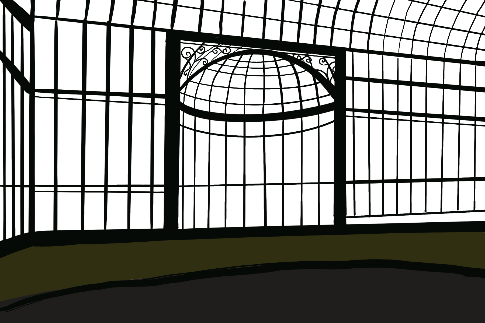

Jungle overlay
Flower mist effect is currently disabled for tuning.
L-system canopy
Fruiting branches from a generative ruleset.
Mist layer
Swap the greenhouse art when your rainforest glass is ready.